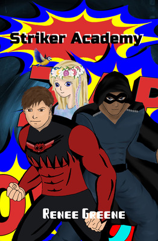
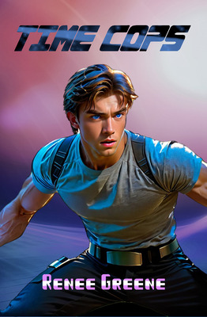
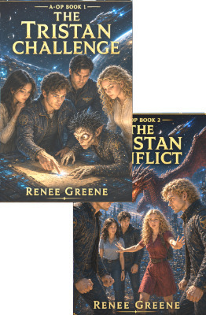
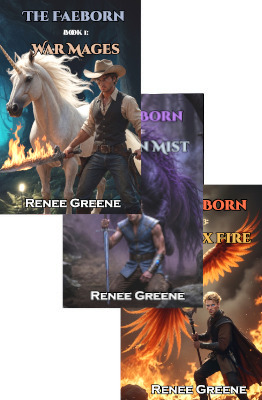
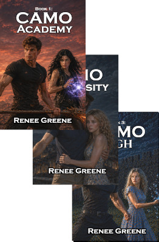

The Heroes Trilogy
Epic Fantasy -- From our Family to Yours!
This is an epic fantasy about a prince who must adventure to save his kingdom, with the help of a tall gnome, an unusually talented acrobat, and a girl everyone seems to want dead. This series is the series that started our writing adventure and bonded our family together through reading. We'd love to share it with your family.

Striker Academy
Super Heroes the Family will Love
Neo wakes up after being dead... again, and the adventure begins. This is a great book where the super heroes were all given powers that are actually curses. Well, all but one. The teenage heroes have to stop the super villains and expose them for who they are to save Neo's parents and stop a master super villain.

Time Cops
Sci-fi meets Fantasy meets steampunk. There's something for everyone in the family!
When a space time anomaly pulls Rynn, a time cop, through a portal, he finds himself caught in a multi-world mess up where he has to face magic, beasts, and intrigues, and the fate of four worlds rests on him.

The A-OPs Series
A Great Sci-Fi with Space Travel, Dragons, Adventure for Everyone.
Todd is expected to win the Tristan Challenge and become the next Overlord of the Planets, but he finds himself in way over his head. It has intrigue and battles for the adults and dragons and fun races for children.

Faeborn
Civilized War is Not Civil
Trained to fight in an arena to replace bloody battles, war mages have great abilities that they get going on sould quest through the Fae forest. Niam is suddenly thrown into leading a team where he is sworn to protect the kingdom and princess. To do so, he must make some unusual allies, including the daughter of the enemy.

The CAMO Series
Dystopia meets Superhero with Epic Battles!
Only a few people in major cities survived the war due to chemical attacks, and those people would never be the same. Some admired their powers, but most feared them. Yet, without them, people would be murdered by those supposedly protecting them and beast would run rampant through the city. Nerds will love everything from Eccentrics, who plays epic battle music when they fight, to creative characters, to the epic fights.